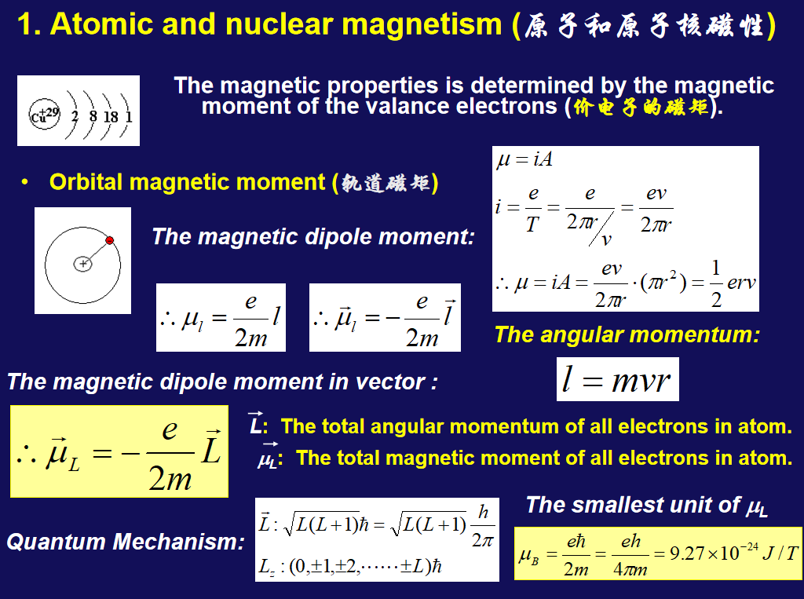
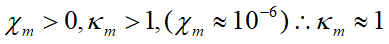
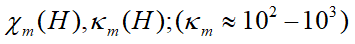
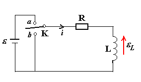
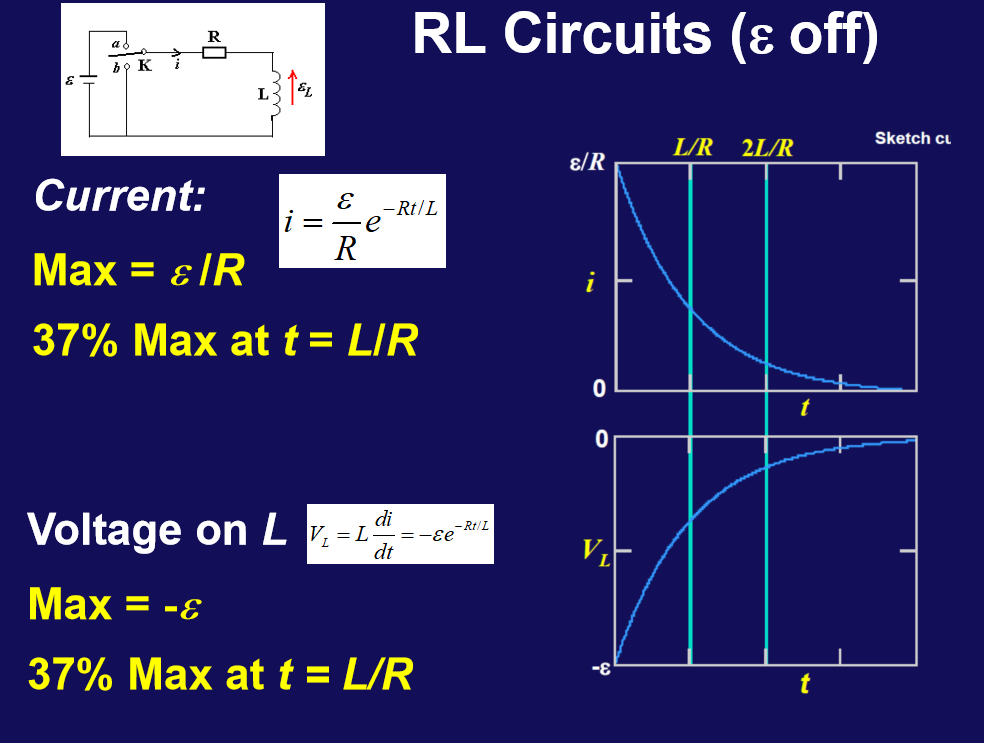

Chapter35(36)Inductance and Magnetic properties of materials
35-1 Inductance (互感)
从法拉利电磁感应定律出发，
\(i_1\) change \(s_2\) induced emf \(ε_2\) \(i_2\) change \(s_1\) induced emf \(ε_1\)
The number of flux linkage (磁通匝链数) in S2 due to S1: \(ψ_{21}(\propto N_1 A_1 B_1) \propto N_1 φ_1 ; ψ_{21} = M_{21} i_2\)
The number of flux linkage (磁通匝链数) in S1 due to S2: \(ψ_{12}(\propto N_2 A_2 B_2) \propto N_2 φ_2 ; ψ_{12} = M_{12} i_1\)
\(M_{12} = \frac{ψ_{12}}{i_1}; ε_2 = -\frac{dψ_{12}}{dt} = -M_{12} \frac{di_1}{dt}\) \(i_1\)change
\(M_{21} = \frac{ψ_{21}}{i_2}; ε_1 = -\frac{dψ_{21}}{dt} = -M_{21} \frac{di_2}{dt}\) \(i_2\)change
\(M_{12}, M_{21}\)被叫做inductance constant互感系数
\(M_{12} = M_{21} = M\)
单位为亨利(H) \(1 H = 1 Wb / A\)
e.g. Example 1
\(L = 1m\\ A = 10cm^2 = 10 ^ {-3} m^2\\ N_1 = 1000\\ N_2 = 20\\ \frac{di_1}{dt} = 10A / s\)
Answer:
\(B = μ_0ni\) \(B_1 = μ_0 \frac{N_1}{L}i_1\)
\(ψ_{12} = N_2 B_1 A = μ_0\frac{N_1 N_2}{L}Ai_1\)
\(M_{12} = \frac{ψ_{12}}{i_1} = μ_0\frac{N_1 N_2}{L}A = 25μH\)
\(ε_2 = -M_{12} \frac{di_1}{dt} = -250μV\)
机场金属探测器工作原理 1. 脉冲电流与脉冲磁场
+ 机场金属探测器通过脉冲电流在探测器的线圈中产生脉冲磁场。
-
金属中感应电动势
- 脉冲磁场遇到金属物体时，根据法拉第电磁感应定律，金属物体中会感应出电动势。
-
铁磁性金属的响应
- 铁磁性金属（如铁、钢）能够“吸引”更多的磁场，因此它们产生的感应电动势更强。
- 更强的磁场（B）导致更大的互感（磁场耦合），从而产生更大的感应电动势。 电动势引发电流
-
感应电动势会在金属物体中引起电流。
- 电流的大小和持续时间取决于金属的电阻率：
- 电阻率较低的金属（如铜）：电流较大且持续时间较短。
- 电阻率较高的金属（如铝）：电流较小且持续时间较长。
-
衰减的电流与磁场
- 由于电流通过金属时会受到电阻的影响，产生的电流最终会衰减。
- 衰减的电流会产生衰减的磁场，衰减的磁场进一步在接收线圈中感应出电流。
-
信号幅度与持续时间
- 金属物体的成分和几何形状决定探测器接收到的信号的幅度和持续时间。
- 较大的金属物体或具有不同形状的金属物体可能会产生不同强度的信号。
- 铁磁性金属产生的信号通常比非铁磁性金属更强。
- 金属物体的成分和几何形状决定探测器接收到的信号的幅度和持续时间。
Self-Inductance (自感)
\(ψ = NBA = Li\)
\(ε_L = -\frac{dψ}{dt} = -L \frac{di}{dt}\)
\(V_b - V_a = -L \frac{di}{dt}\)
总感觉高中应该是上过这些内容，可惜忘得差不多了，再来一遍吧。
对于上面这张图，开关闭合后，就有电流的流动(顺时针)，因而产生纸面向里的磁通量变化。
随着磁通量增加就会感应出电动势，阻碍电流的增大，感应电动势的方向与电流方向相反，也就是逆时针方向。
实际上，电流的开启速度是被调节的，以确保回路中感应的电动势与电池电压相平衡。也就是说，感应电动势会调整电流的变化速度，使得总电压（电池电压和感应电动势的合成）恰好为零，从而维持稳定的电流。
因此我们有\(V_b - V_a = -\frac{dΦ_b}{dt} \propto -\frac{di}{dt}\)
首先，通电的电流感应出的磁场大小与电流大小成正比，即\(B \propto i\)
磁通量也就与电流成正比，即\(Φ = \iint \vec{B} * d\vec{A} \propto i\)
定义常数自感系数为\(L = \frac{Φ_b}{i}\)，结合起法拉利电磁感应定律就有\(ε = -\frac{dΦ_b}{dt} = -\frac{dLi}{dt} = -L\frac{di}{dt}\)
计算自感系数
e.g. Example 2
横截面积\(A\)，电流\(i\)，长度\(l\)，匝数密度\(n\)
\(B = μ_0ni\)
\(ψ = NΦ_B = μ_0n^2ilA\)
\(L = \frac{ψ}{i} = μ_0n^2lA = μ_0n^2V\)，此处的\(V\)为体积。
\(L_v = μ_0n^2\) 单位体积的自感系数
\(L_l = μ_0n^2A\) 单位长度的自感系数
互感系数等于两个线圈的自感系数之积开根号
\(M = \sqrt{L_1L_2}\)
直接串联与对偶串联：
对于电容器：
\(C = K_e C_0\)
对于中间插了磁性材料的螺线管
\(L = K_m L_0\)
其中\(K_m\)为互感系数的系数
- 顺磁性或抗磁性材料,\(k_m ≈ 1\)
- 铁磁性材料 \(K_m = 10^{3} - 10^{4}\)
35-2 材料的磁性质
-
原子和原子核磁性(看不懂)

\(μ = iA\)
\(i = \frac{e}{T} = \frac{e}{2πr}v\)
\(μ = \frac{ev}{2πr}A = \frac{ev}{2πr}πr^2 = \frac{evr}{2}\)
角动量：\(l = mvr\)
因此\(\vec{μ_L} = -\frac{e}{2m} \vec{l}\)注意方向不同
其中\(\vec{μ_L}\)为整个原子的磁矩，\(\vec{L}\)为所有电子的总角动量。
那个h带箭头的符号是约化普朗克常数，等于\(\frac{h}{2π}\)。
Particle Spin Type Electron(电子) \( s = \frac{1}{2} \hbar \) Fermi Proton(质子) \( s = \frac{1}{2} \hbar \) Fermi Neutron(中子) \( s = \frac{1}{2} \hbar \) Fermi Deuteron(氘核) \( s = \hbar \) Bose Alpha Particle(氦-4核) \( s = 0 \) Bose 原子核的磁性对于原子，或者说材料的磁性而言，都是可以忽略不计的。
-
磁化强度
宏观结果来看：\(\vec{B} = \vec{B_0} + \vec{B_M'}\)
定义磁化强度：\(\vec{M} = \frac{\sum \vec{μ}}{\triangle V}\)为单位体积内磁矩的矢量和。
因此，\(∮\vec{M} d\vec{l} = \sum i_{bound}\)
\(i_{bound}\)被称为束缚电流，是由磁化强度的变化产生的。
均匀磁化：

这是如何得到的？非常精妙的思路：
\(j' = \frac{i'}{\triangle z}\)就是电流密度，因为相当于老师画的很多电流元，它们的电流乘面积最后等效为了束缚电流乘整块面积。
同理，对于非均匀磁化，就是一个积分思想：
这里面不只有表电流，还有体电流，也仍然成立。
-
磁场强度
B叫做磁感应强度。
新安培环路定律：
真空中，\(\vec{B} = \mu_0\vec{H}\)，因为\(M\)为0.
-
顺磁材料
前提：\(\vec{u_m}!=0\)

-
抗磁材料
不管你给电子加速还是减速，都会产生一个反向的\(\triangle u\)，这样就形成了对抗。
-
铁磁材料

-
35-3 RL电路
-
RC电路
注意有所谓的\(C'\)，而如何计算这个\(C'\)？取t=0，最开始电容器上不是没有电荷吗？所以\(q=0\)，也就是\(C' = -C\epsilon\)。
-
RL电路

开关拨到a：
类似的结果，就是把电容器改成了自感的材料。
因此关于电动势的方程就从\(\frac{q}{C}\)改为了\(\frac{Ldi}{dt}\)也就是自感电动势。
积分还是类似的过程，而\(C'\)常数在t=0的时候也就是\(-\frac{\epsilon}{R}\)，因为一开始没有电流。
我们定义一个时间常数\(τ = \frac{L}{R}\)实现简化。
\(V_L\)指的是自感电动势。
图像：
开关拨到b，其实变化率也就是所谓的时间常数都是不变的

35-4 电路能量
核心是要理解\(dW = -\epsilon_Ldq\)，相当于克服自感电动势移动单位电荷，那么\(dW = -\epsilon_Ldit = -\epsilon_Lidt = Lidi\)
所以\(W = \int_{0}^{i_{max}} Lidi = \frac{1}{2}Li_{max}^2\)
做的功储藏在自感线圈的磁场里。
\(L = u_0n^2lA = u_0n^2V\)
\(B = u_0nI\)
所以能量密度\(u_B = \frac{W}{V} = \frac{u_0n^2I^2V}{2V} = \frac{u_0n^2I^2}{2} = \frac{B^2}{2u_0}\)
35-5 电磁振荡
与弹性势能与动能的转换是类似的。
主要是要理解为什么取\(dU/dt = 0\)的点，因为在一个理想LC电路中，不存在能量损耗。
那么这个讨论了之后就很简单了，轻松算的\(q = q_mcos(wt+\phi),w = \sqrt{\frac{1}{LC}}\)
阻尼和受拍振动：
这里的思路就是假设\(q = Ae^{\lambda t}\)然后代入计算，实际就是一个一元二次方程。
很妙的是这里最后加了个\(C\epsilon\)，好吧就应该这么做。
- 过阻尼 电阻过大，两个解，也就是什么\(b^2-4ac>0\)
- 临界阻尼态 一个解。 注意看这个函数退化了已经(笑)。
- 阻尼振荡 虚数解，出现阻尼振荡，但是振幅逐步衰减。
电源改成一个交流电：出现受拍振动。
其本质就是共振，这和上学期上的挺像。